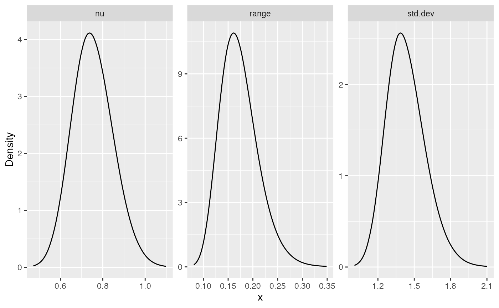
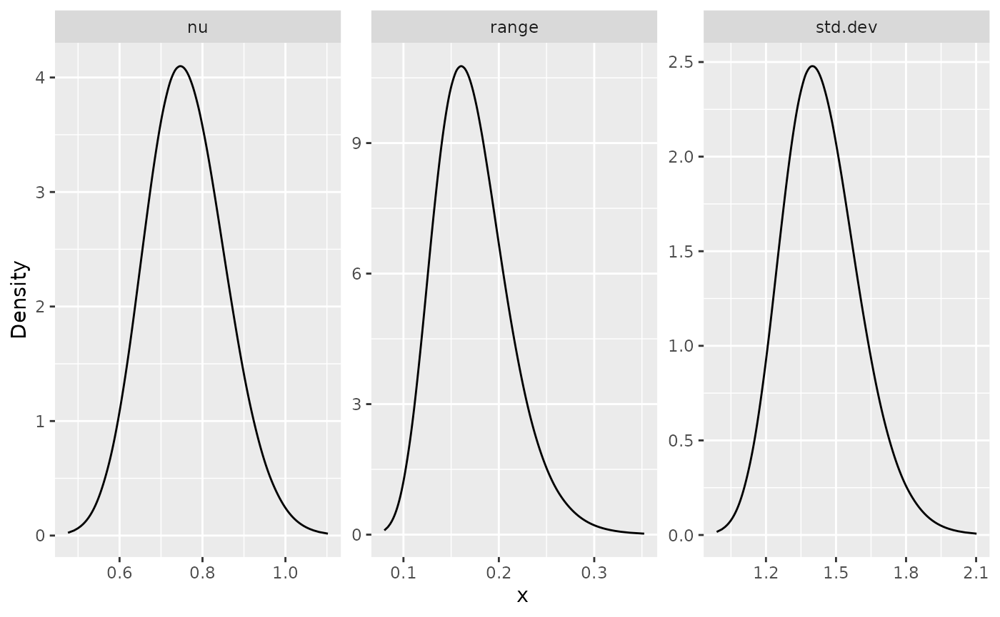

Whittle--Matérn fields with general smoothness
David Bolin, Alexandre B. Simas
2023-05-30
Source:vignettes/fem_models.Rmd
fem_models.RmdIntroduction
In this vignette we will introduce how to fit Whittle–Matérn fields
with general smoothness based on finite element and rational
approximations. The theory for this approach is provided in Bolin et
al. (2023) and Xiong,
Simas, and Bolin (2022). For the implementation, we make use
of the rSPDE
package for the rational approximations.
These models are thus implemented using finite element approximations. Such approximations are not needed in for integer smoothness parameters, and for the details about the exact models we refer to the vignettes
For further details on the construction of metric graphs, see Working with metric graphs
Constructing the graph and the mesh
We begin by loading the rSPDE and
MetricGraph packages:
As an example, we consider the following metric graph
library(sp)
line1 <- Line(rbind(c(0,0),c(1,0)))
line2 <- Line(rbind(c(0,0),c(0,1)))
line3 <- Line(rbind(c(0,1),c(-1,1)))
theta <- seq(from=pi,to=3*pi/2,length.out = 20)
line4 <- Line(cbind(sin(theta),1+ cos(theta)))
Lines = SpatialLines(list(Lines(list(line1),ID="1"),
Lines(list(line2),ID="2"),
Lines(list(line3),ID="3"),
Lines(list(line4),ID="4")))
graph <- metric_graph$new(lines = Lines)
graph$plot()
To construct a FEM approximation of a Whittle–Matérn field with general smoothness, we must first construct a mesh on the graph.
graph$build_mesh(h = 0.5)
graph$plot(mesh=TRUE)
In the command build_mesh, the argument h
decides the largest spacing between nodes in the mesh. As can be seen in
the plot, the mesh is very coarse, so let’s reduce the value of
h and rebuild the mesh:
graph$build_mesh(h = 0.01)We are now ready to specify the model \[
(\kappa^2 - \Delta)^{\alpha} \tau u = \mathcal{W}
\] for the Whittle–Matérn field \(u\). For this, we use the
matern.operators function from the rSPDE
package:
sigma <- 1.3
range <- 0.15
nu <- 0.8
rspde.order <- 2
op <- matern.operators(nu = nu, range = range, sigma = sigma,
parameterization = "matern",
m = rspde.order, graph = graph) As can be seen in the code, we specify \(\kappa\) via the practical correlation
range \(\sqrt{8\nu}/\kappa\). Also, the
model is not parametrized by \(\tau,
\alpha\) but instead by \(\sigma,
\nu\). Here, sigma denotes the standard deviation of
the field and nu is the smoothness parameter, which is
related to \(\alpha\) via the relation
\(\alpha = \nu + 1/2\). The object
op_cov contains the matrices needed for evaluating the
distribution of the stochastic weights in the FEM approximation.
Let us simulate the field \(u\) at the mesh locations and plot the result:
u <- simulate(op)
graph$plot_function(u, plotly = TRUE)If we want to evaluate \(u(s)\) at
some locations \(s_1,\ldots, s_n\), we
need to multiply the weights with the FEM basis functions \(\varphi_i(s)\) evaluated at the locations.
For this, we can construct the observation matrix \(\boldsymbol{\mathrm{A}}\), with elements
\(A_{ij} = \varphi_j(s_i)\), which
links the FEM basis functions to the locations. This can be done by the
function mesh_A in the metric graph object. To illustrate
this, let us simulate some observation locations on the graph and
construct the matrix:
obs.per.edge <- 100
obs.loc <- NULL
for(i in 1:graph$nE) {
obs.loc <- rbind(obs.loc,
cbind(rep(i,obs.per.edge), runif(obs.per.edge)))
}
n.obs <- obs.per.edge*graph$nE
A <- graph$mesh_A(obs.loc)In the code, we generate \(50\) observation locations per edge in the graph, drawn at random. It can be noted that we assume that the observation locations are given in the format \((e, d)\) where \(e\) denotes the edge of the observation and \(d\) is the position on the edge, i.e., the relative distance from the first vertex of the edge.
To compute the precision matrix from the covariance-based rational
approximation one can use the precision() method on object
returned by the matern.operators() function:
Q <- precision(op)As an illustration of the model, let us compute the covariance function between the process at the mid point of the second edge and all other locations in the mesh. The covariances can be calculated as \[ \overline{\boldsymbol{\mathrm{A}}} \boldsymbol{\mathrm{Q}}^{-1}\overline{\boldsymbol{\mathrm{v}}}. \] Here, \(\boldsymbol{\mathrm{Q}}\) is the precision matrix obtained from the rational approximation, \(\boldsymbol{\mathrm{A}}\) is an identity matrix since we are evaluating the approximation in the nodes of the FEM mesh, \(\overline{\boldsymbol{\mathrm{v}}}\) is the \((m+1)\)-fold vertical concatenation of the vector \(\boldsymbol{\mathrm{v}}\), where \(\boldsymbol{\mathrm{v}}\) is a vector with all basis functions evaluated in \(s=0.5\).
Using the model for inference
There is built-in support for computing log-likelihood functions and
performing kriging prediction in the rSPDE package which we
can use for the graph model. To illustrate this, we use the simulation
to create some noisy observations of the process. We generate the
observations as \(Y_i = 1 + 2x_{i1} - 3 x_{i2}
u(s_i) + \varepsilon_i\), where \(\varepsilon_i \sim N(0,\sigma_e^2)\) is
Gaussian measurement noise, \(x_1\) and
\(x_2\) are covariates generated the
relative positions of the observations on the graph.
sigma.e <- 0.1
x1 <- obs.loc[,1]
x2 <- obs.loc[,2]
Y <- 1 + 2*x1 - 3*x2 + as.vector(A %*% u + sigma.e * rnorm(n.obs))Let us now fit the model. To this end we will use the
graph_lme() function (that, for the finite element models,
acts as a wrapper for the rspde_lme() function from the
rSPDE package). To this end, let us now assemble the
data.frame() with the observations, the observation
locations and the covariates:
df_data <- data.frame(y = Y, edge_number = obs.loc[,1],
distance_on_edge = obs.loc[,2],
x1 = x1, x2 = x2)Let us now add the data to the graph object and plot it:
graph$add_observations(data = df_data, normalized = TRUE)
graph$plot(data = "y")
We can now fit the model. To this end, we use the
graph_lme() function and set the model to
'WM’.
fit <- graph_lme(y ~ x1 + x2, graph = graph, model = "WM")Let us obtain a summary of the model:
summary(fit)##
## Latent model - Whittle-Matern
##
## Call:
## graph_lme(formula = y ~ x1 + x2, graph = graph, model = "WM")
##
## Fixed effects:
## Estimate Std.error z-value Pr(>|z|)
## (Intercept) 0.3994 0.7198 0.555 0.57897
## x1 2.1203 0.2018 10.507 < 2e-16 ***
## x2 -2.3451 0.7177 -3.268 0.00108 **
##
## Random effects:
## Estimate Std.error z-value
## alpha 1.264733 0.020899 60.517
## tau 0.054938 0.005454 10.073
## kappa 15.887315 2.459045 6.461
##
## Random effects (Matern parameterization):
## Estimate Std.error z-value
## nu 0.76473 0.02090 36.592
## sigma 1.34775 0.13570 9.932
## range 0.15569 0.02297 6.777
##
## Measurement error:
## Estimate Std.error z-value
## std. dev 0.097304 0.006313 15.41
## ---
## Signif. codes: 0 '***' 0.001 '**' 0.01 '*' 0.05 '.' 0.1 ' ' 1
##
## Log-Likelihood: -126.9762
## Number of function calls by 'optim' = 95
## Optimization method used in 'optim' = L-BFGS-B
##
## Time used to: fit the model = 38.82996 secsLet us compare the values of the parameters of the latent model with the true ones:
print(data.frame(sigma = c(sigma, fit$matern_coeff$random_effects[2]),
range = c(range, fit$matern_coeff$random_effects[3]),
nu = c(nu, fit$matern_coeff$random_effects[1]),
row.names = c("Truth", "Estimates")))## sigma range nu
## Truth 1.300000 0.150000 0.8000000
## Estimates 1.347753 0.155686 0.7647331
op_est <- matern.operators(parameterization = "spde",
m = rspde.order, graph = graph)
fit2 <- rspde_lme(y ~ x1 + x2, data = df_data, loc = c("edge_number", "distance_on_edge"), model = op_est, parallel=TRUE)
summary(fit2)##
## Latent model - Whittle-Matern
##
## Call:
## rspde_lme(formula = y ~ x1 + x2, loc = c("edge_number", "distance_on_edge"),
## data = df_data, model = op_est, parallel = TRUE)
##
## Fixed effects:
## Estimate Std.error z-value Pr(>|z|)
## (Intercept) 0.3994 0.7198 0.555 0.57897
## x1 2.1203 0.2018 10.507 < 2e-16 ***
## x2 -2.3451 0.7177 -3.268 0.00108 **
##
## Random effects:
## Estimate Std.error z-value
## alpha 1.264733 0.020899 60.517
## tau 0.054938 0.005454 10.073
## kappa 15.887315 2.459045 6.461
##
## Random effects (Matern parameterization):
## Estimate Std.error z-value
## nu 0.76473 0.02090 36.592
## sigma 1.34775 0.13570 9.932
## range 0.15569 0.02297 6.777
##
## Measurement error:
## Estimate Std.error z-value
## std. dev 0.097304 0.006313 15.41
## ---
## Signif. codes: 0 '***' 0.001 '**' 0.01 '*' 0.05 '.' 0.1 ' ' 1
##
## Log-Likelihood: -126.9762
## Number of function calls by 'optim' = 95
## Optimization method used in 'optim' = L-BFGS-B
##
## Time used to: fit the model = 44.41869 secs
## set up the parallelization = 1.43035 secsKriging
Given that we have estimated the parameters, let us compute the kriging predictor of the field given the observations at the mesh nodes.
We will perform kriging with the predict() method. To
this end, we need to provide a data.frame containing the
prediction locations, as well as the values of the covariates at the
prediction locations.
df_pred <- data.frame(edge_number = graph$mesh$VtE[,1],
distance_on_edge = graph$mesh$VtE[,2],
x1 = graph$mesh$VtE[,1],
x2 = graph$mesh$VtE[,2])
u.krig <- predict(fit, data = df_pred, normalized = TRUE)The estimate is shown in the following figure
graph$plot_function(as.vector(u.krig$mean)) 
Fitting a model with replicates
Let us now illustrate how to simulate a data set with replicates and
then fit a model to such data. To simulate a latent model with
replicates, all we do is set the nsim argument to the
number of replicates.
n.rep <- 30
u.rep <- simulate(op, nsim = n.rep)Now, let us generate the observed values \(Y\):
Note that \(Y\) is a matrix with 20
columns, each column containing one replicate. We need to turn
y into a vector and create an auxiliary vector
repl indexing the replicates of y:
y_vec <- as.vector(Y.rep)
repl <- rep(1:n.rep, each = n.obs)
df_data_repl <- data.frame(y = y_vec,
edge_number = rep(obs.loc[,1], n.rep),
distance_on_edge = rep(obs.loc[,2], n.rep),
repl = repl)Let us clear the previous observations and add the new data to the graph:
graph$clear_observations()
graph$add_observations(data = df_data_repl, normalized = TRUE, group = "repl")We can now fit the model in the same way as before by using the
rspde_lme() function. Note that we can optimize in parallel
by setting parallel to TRUE. If we do not
specify which replicate to consider, in the which_repl
argument, all replicates will be considered.
fit_repl <- graph_lme(y ~ -1, graph = graph, model = "WM", parallel = TRUE)## Warning in sqrt(diag(inv_fisher)): NaNs producedLet us see a summary of the fit:
summary(fit_repl)##
## Latent model - Whittle-Matern
##
## Call:
## graph_lme(formula = y ~ -1, graph = graph, model = "WM", parallel = TRUE)##
## No fixed effects.##
## Random effects:
## Estimate Std.error z-value
## alpha 1.26478 NaN NaN
## tau 0.05824 NaN NaN
## kappa 15.07311 0.42234 35.69
##
## Random effects (Matern parameterization):
## Estimate Std.error z-value
## nu 0.764777 NaN NaN
## sigma 1.323443 0.025389 52.13
## range 0.164100 0.005047 32.51
##
## Measurement error:
## Estimate Std.error z-value
## std. dev 0.300756 0.002942 102.2
## ---
## Signif. codes: 0 '***' 0.001 '**' 0.01 '*' 0.05 '.' 0.1 ' ' 1
##
## Log-Likelihood: -9741.821
## Number of function calls by 'optim' = 65
## Optimization method used in 'optim' = L-BFGS-B
##
## Time used to: fit the model = 2.95575 mins
## set up the parallelization = 1.37341 secsLet us compare the values of the parameters of the latent model with the true ones:
print(data.frame(sigma = c(sigma, fit_repl$matern_coeff$random_effects[2]),
range = c(range, fit_repl$matern_coeff$random_effects[3]),
nu = c(nu, fit_repl$matern_coeff$random_effects[1]),
row.names = c("Truth", "Estimates")))## sigma range nu
## Truth 1.300000 0.1500000 0.8000000
## Estimates 1.323443 0.1641003 0.7647766Using the R-INLA implementation
We also have an R-INLA implementation of the rational
SPDE approach for metric graphs.
We begin by defining the model by using the
rspde.metric_graph() function. This function contains the
same arguments as the function rspde.matern(). We refer the
reader to the R-INLA
implementation of the rational SPDE approach vignette for further
details.
We begin by clearing the previous observations and adding the observations (for the case without replicates) to the graph:
graph$clear_observations()
graph$add_observations(data = df_data, normalized = TRUE)Let us create the model object:
library(INLA)
rspde_model <- rspde.metric_graph(graph)By default, the order of the rational approximation is 2.
We can now create the A matrix and the index object by
using the same functions as for the rational SPDE approach, namely,
rspde.make.A() and rspde.make.index(),
supplying the graph object as the mesh argument. Here we create the
A matrix:
Abar <- rspde.make.A(graph)Now, let us create the index object:
rspde.index <- rspde.make.index(name="field", mesh=graph)The remaining is standard: we create the formula object, the stack
object, and then fit the model by using the inla()
function. So, first we create the formula object:
f.s <- y ~ -1 + Intercept + x1 + x2 + f(field, model = rspde_model)Now we create the inla.stack object:
stk.dat <- inla.stack(
data = data.frame(y = graph_data_spde(rspde_model)$y), A = list(Abar,1), tag = "est",
effects =
list(c(
rspde.index,
list(Intercept = 1)), list(x1 = graph_data_spde(rspde_model)$x1 ,
x2 = graph_data_spde(rspde_model)$x2)
)
)Finally, we can fit the model:
rspde_fit <- inla(f.s, data = inla.stack.data(stk.dat),
control.inla = list(int.strategy = "eb"),
control.predictor = list(A = inla.stack.A(stk.dat), compute = TRUE)
)We can use the same functions as the rspde fitted models
in inla. For instance, we can see the results in the
original scale by creating the result object:
result_fit <- rspde.result(rspde_fit, "field", rspde_model)
summary(result_fit)## mean sd 0.025quant 0.5quant 0.975quant mode
## std.dev 1.442560 0.1691180 1.126040 1.438430 1.788440 1.436300
## range 0.183112 0.0449766 0.104982 0.180247 0.279886 0.175196
## nu 0.735546 0.0914142 0.575143 0.728315 0.931972 0.707922Let us compare with the true values:
result_df <- data.frame(
parameter = c("std.dev", "range", "nu"),
true = c(sigma, range, nu),
mean = c(
result_fit$summary.std.dev$mean,
result_fit$summary.range$mean,
result_fit$summary.nu$mean
),
mode = c(
result_fit$summary.std.dev$mode,
result_fit$summary.range$mode,
result_fit$summary.nu$mode
)
)
print(result_df)## parameter true mean mode
## 1 std.dev 1.30 1.4425577 1.4363031
## 2 range 0.15 0.1831122 0.1751960
## 3 nu 0.80 0.7355458 0.7079218We can also plot the posterior marginal densities with the help of
the gg_df() function:
posterior_df_fit <- gg_df(result_fit)
library(ggplot2)
ggplot(posterior_df_fit) + geom_line(aes(x = x, y = y)) +
facet_wrap(~parameter, scales = "free") + labs(y = "Density")
Kriging with the R-INLA implementation
We will do kriging on the mesh locations:
pred_loc <- graph$mesh$VtELet us now add the observations for prediction:
graph$add_observations(data = data.frame(y=rep(NA,nrow(pred_loc)),
edge_number = pred_loc[,1],
distance_on_edge = pred_loc[,2]),
normalized = TRUE)Let us compute the A matrix at the prediction
locations:
Abar_prd <- rspde.make.A(graph, loc=pred_loc)Let us build the prediction stack and gather it with the estimation
stack. To this end, we set the argument only_pred to
TRUE, in which it will return the data.frame
containing the NA data.
data_pred <- graph_data_spde(rspde_model, only_pred=TRUE)
ef.prd <-
list(c(rspde.index, list(Intercept = 1)),
list(x1 = data_pred[["__distance_on_edge"]],
x2 = data_pred[["__distance_on_edge"]]^2))
stk.prd <- inla.stack(
data = data.frame(y = data_pred$y),
A = list(Abar_prd,1), tag = "prd",
effects = ef.prd
)
stk.all <- inla.stack(stk.dat, stk.prd)Let us obtain the predictions:
rspde_fitprd <- inla(f.s,
data = inla.stack.data(stk.all),
control.predictor = list(
A = inla.stack.A(stk.all),
compute = TRUE, link = 1
),
control.compute = list(
return.marginals = FALSE,
return.marginals.predictor = FALSE
),
control.inla = list(int.strategy = "eb")
)Let us now extract the indices of the predicted nodes and store the means:
id.prd <- inla.stack.index(stk.all, "prd")$data
m.prd <- rspde_fitprd$summary.fitted.values$mean[id.prd]Finally, let us plot the predicted values. To this end we will use
the plot_function() graph method.
graph$plot_function(m.prd, plotly = TRUE) Using R-INLA implementation to fit models with
replicates
Let us begin by cloning the graph and clearing the observations on the cloned graph:
graph_rep <- graph$clone()
graph_rep$clear_observations()We will now add the data with replicates to the graph:
graph_rep$add_observations(data = data.frame(y=as.vector(Y.rep),
edge_number = rep(obs.loc[,1], n.rep),
distance_on_edge = rep(obs.loc[,2], n.rep),
repl = rep(1:n.rep, each = n.obs)),
group = "repl",
normalized = TRUE)To fit the model with replicates we need to create the corresponding
A matrix and index object:
Abar.rep <- rspde.make.A(
mesh = graph_rep, index = rep(1:n.obs, times = n.rep),
repl = rep(1:n.rep, each = n.obs)
)
mesh.index.rep <- rspde.make.index(
name = "field", mesh = graph_rep,
n.repl = n.rep
)Similarly, let us create a new rspde model object:
rspde_model_rep <- rspde.metric_graph(graph_rep)Let us now create the corresponding inla.stack object,
where we set the repl argument in the function
graph_data_spde to __all since we want to use
all replicates:
st.dat.rep <- inla.stack(
data = graph_data_spde(rspde_model_rep,
repl = "__all"),
A = Abar.rep,
effects = mesh.index.rep
)Observe that we need the response variable y to be a
vector. We can now create the formula object, remembering
that since we gave the name argument field, when creating
the index, we need to pass field.repl to the
formula:
f.rep <-
y ~ -1 + f(field,
model = rspde_model_rep,
replicate = field.repl
)We can, finally, fit the model:
rspde_fit_rep <-
inla(f.rep,
data = inla.stack.data(st.dat.rep),
family = "gaussian",
control.predictor =
list(A = inla.stack.A(st.dat.rep))
)We can obtain the estimates in the original scale with the
rspde.result() function:
result_fit_rep <- rspde.result(rspde_fit_rep, "field", rspde_model)
summary(result_fit_rep)## mean sd 0.025quant 0.5quant 0.975quant mode
## std.dev 1.337840 0.02929150 1.288850 1.334670 1.402490 1.324280
## range 0.171510 0.00570595 0.159858 0.171728 0.182151 0.172680
## nu 0.722854 0.02277280 0.684609 0.720448 0.772890 0.712693Let us compare with the true values of the parameters:
result_rep_df <- data.frame(
parameter = c("std.dev", "range", "nu"),
true = c(sigma, range, nu),
mean = c(
result_fit_rep$summary.std.dev$mean,
result_fit_rep$summary.range$mean,
result_fit_rep$summary.nu$mean
),
mode = c(
result_fit_rep$summary.std.dev$mode,
result_fit_rep$summary.range$mode,
result_fit_rep$summary.nu$mode
)
)
print(result_rep_df)## parameter true mean mode
## 1 std.dev 1.30 1.3378386 1.3242794
## 2 range 0.15 0.1715095 0.1726802
## 3 nu 0.80 0.7228538 0.7126929We can also plot the posterior marginal densities with the help of
the gg_df() function:
posterior_df_fit_rep <- gg_df(result_fit_rep)
ggplot(posterior_df_fit_rep) + geom_line(aes(x = x, y = y)) +
facet_wrap(~parameter, scales = "free") + labs(y = "Density")
Using inlabru implementation
The inlabru package allows us to fit models and do
kriging in a straighforward manner, without having to handle
A matrices, indices nor inla.stack objects.
Therefore, we suggest the reader to use this implementation when using
our implementation to fit real data.
Let us clear the graph, since it contains NA
observations we used for prediction, add the observations again, and
create a new rSPDE model object:
graph$clear_observations()
graph$add_observations(data = df_data,
normalized = TRUE)
rspde_model <- rspde.metric_graph(graph)Let us now load the inlabru package and create the
component (which is inlabru’s formula-like object). Since
we are using the data from the graph, inlabru will also
obtain the locations from the graph, thus, there is no need to provide
the locations. However, we need a name for the locations for using
inlabru’s predict method. Therefore, we can choose any name
for the location that is not a name being used in the graph’s data. In
our case we will use the name loc:
Now, we can directly fit the model, where we pass the name of the
location variable as the loc argument of the
graph_data_spde() function:
rspde_bru_fit <-
bru(cmp,
data=graph_data_spde(rspde_model, loc = "loc"),
options=list(
family = "gaussian")
)Let us now obtain the estimates of the parameters in the original
scale by using the rspde.result() function:
result_bru_fit <- rspde.result(rspde_bru_fit, "field", rspde_model)
summary(result_bru_fit)## mean sd 0.025quant 0.5quant 0.975quant mode
## std.dev 1.432320 0.1526500 1.151300 1.426280 1.750050 1.416140
## range 0.171180 0.0352163 0.110773 0.168352 0.248512 0.163382
## nu 0.762828 0.0948977 0.587815 0.758712 0.959180 0.748284Let us compare with the true values of the parameters:
result_bru_df <- data.frame(
parameter = c("std.dev", "range", "nu"),
true = c(sigma, range, nu),
mean = c(
result_bru_fit$summary.std.dev$mean,
result_bru_fit$summary.range$mean,
result_bru_fit$summary.nu$mean
),
mode = c(
result_bru_fit$summary.std.dev$mode,
result_bru_fit$summary.range$mode,
result_bru_fit$summary.nu$mode
)
)
print(result_bru_df)## parameter true mean mode
## 1 std.dev 1.30 1.4323219 1.4161396
## 2 range 0.15 0.1711800 0.1633825
## 3 nu 0.80 0.7628284 0.7482841We can also plot the posterior marginal densities with the help of
the gg_df() function:
posterior_df_bru_fit <- gg_df(result_bru_fit)
ggplot(posterior_df_bru_fit) + geom_line(aes(x = x, y = y)) +
facet_wrap(~parameter, scales = "free") + labs(y = "Density")
Kriging with the inlabru implementation
It is very easy to do kriging with the inlabru
implementation. We simply need to provide the prediction locations to
the predict() method.
In this example we will use the mesh locations. To this end we will
use the get_mesh_locations() method. We also set
bru=TRUE and loc="loc" to obtain a data list
suitable to be used with inlabru.
data_prd_list <- graph$get_mesh_locations(bru = TRUE,
loc = "loc")
data_prd_list[["x1"]] <- data_prd_list$loc[,2]
data_prd_list[["x2"]] <- data_prd_list$loc[,2]^2Now, we can simply provide these locations to the
predict method along with the fitted object
rspde_bru_fit:
field_pred <- predict(rspde_model, cmp, rspde_bru_fit, data=data_prd_list, ~field)Finally, let us plot the predicted values. To this end we will use
the plot_function() graph method:
plot(field_pred, plotly = TRUE) Using inlabru to fit models with replicates
We can also use our inlabru implementation to fit models
with replicates. We will consider the same data that was generated
above, where the number of replicates is 30.
For this implementation we will use the rspde_model_rep
object.
We can now create the component, passing the vector with the indices
of the replicates as the replicate argument. For the
replicate argument we use the function
graph_repl_spde() to extract the vector of replicates,
where we set choose __all as the replicates, since we want
all replicates.
cmp_rep <-
y ~ -1 + field(loc, model = rspde_model_rep,
replicate = graph_repl_spde(rspde_model_rep, "__all"))Now, we are ready to fit the model. Observe that we set the
repl argument to __all since we will use all
replicates and the loc argument to loc, which
is the name we gave to the locations.
rspde_bru_fit_rep <-
bru(cmp_rep,
data=graph_data_spde(rspde_model_rep,
repl = "__all",
loc = "loc"),
options=list(
family = "gaussian")
)We can obtain the estimates in the original scale with the
rspde.result() function:
result_bru_fit_rep <- rspde.result(rspde_bru_fit_rep, "field", rspde_model)
summary(result_bru_fit_rep)## mean sd 0.025quant 0.5quant 0.975quant mode
## std.dev 1.337840 0.02929520 1.288850 1.334670 1.402500 1.324280
## range 0.171508 0.00570558 0.159857 0.171726 0.182148 0.172678
## nu 0.722849 0.02277240 0.684605 0.720443 0.772885 0.712688Let us compare with the true values of the parameters:
result_bru_rep_df <- data.frame(
parameter = c("std.dev", "range", "nu"),
true = c(sigma, range, nu),
mean = c(
result_bru_fit_rep$summary.std.dev$mean,
result_bru_fit_rep$summary.range$mean,
result_bru_fit_rep$summary.nu$mean
),
mode = c(
result_bru_fit_rep$summary.std.dev$mode,
result_bru_fit_rep$summary.range$mode,
result_bru_fit_rep$summary.nu$mode
)
)
print(result_bru_rep_df)## parameter true mean mode
## 1 std.dev 1.30 1.3378401 1.3242785
## 2 range 0.15 0.1715077 0.1726783
## 3 nu 0.80 0.7228490 0.7126882We can also plot the posterior marginal densities with the help of
the gg_df() function:
posterior_df_bru_fit_rep <- gg_df(result_bru_fit_rep)
ggplot(posterior_df_bru_fit_rep) + geom_line(aes(x = x, y = y)) +
facet_wrap(~parameter, scales = "free") + labs(y = "Density")